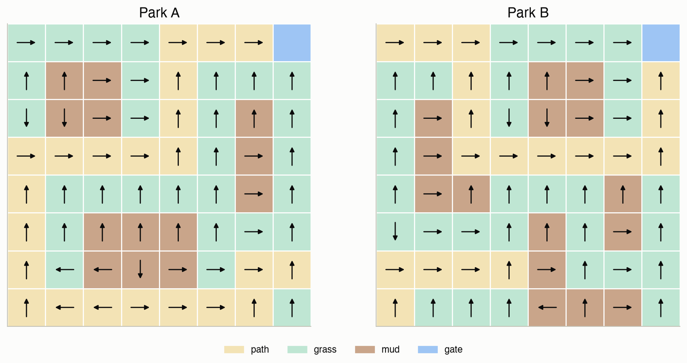
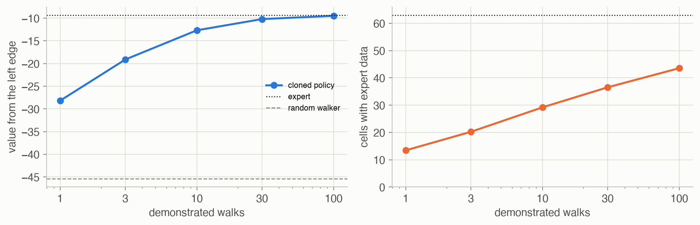
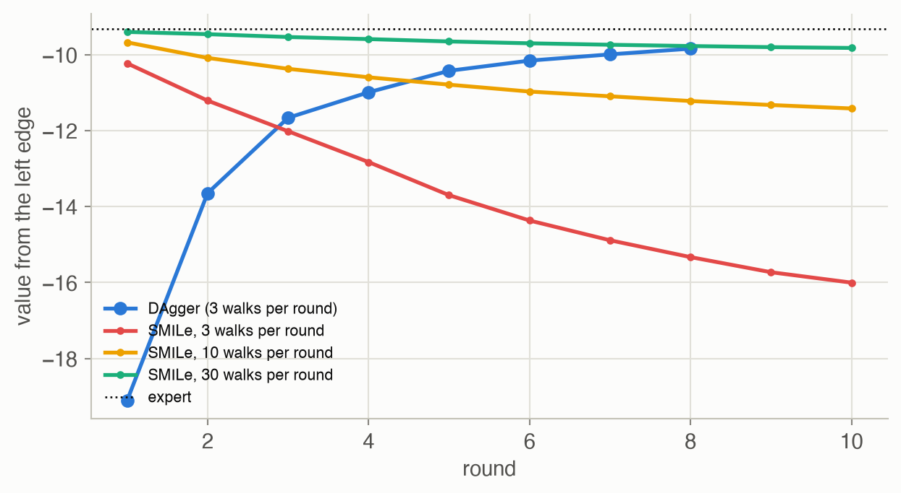
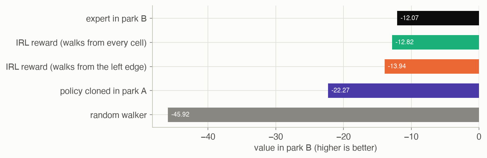

18 · Imitation Learning
Part III — Model Uncertainty
Big picture
Where this chapter fits
Every method so far needed a reward function, and designing one is often the hardest part. What reward makes a car drive “well”? Chapter 17 even showed a well-meant bonus producing a policy that never reaches its goal. Often it is easier to show the desired behavior than to score it. Imitation learning learns from an expert’s demonstrations instead of a reward. It closes Part III: the agent still doesn’t know the model, and now it doesn’t know the objective either. Part IV turns to uncertainty about the state itself, starting with Chapter 19.
The question: given demonstrations of good behavior, how do we learn a policy that behaves well, including in situations the expert never showed us?
The short answer: copy the expert’s choices, or recover what the expert wanted. Behavioral cloning treats imitation as supervised learning: predict the expert’s action from the state. It is simple but brittle. Small mistakes lead to states the expert never visited, where the clone has no idea what to do, and errors cascade. DAgger and SMILe fix this by asking the expert to label the states the learner actually reaches. Inverse reinforcement learning instead infers a reward function that the expert appears to optimize, then plans with it. A reward is a compact explanation of behavior, so it can transfer to new situations where a copied policy cannot. Generative adversarial imitation learning trains a policy until a discriminator can’t tell its behavior from the expert’s.
The key ideas at a glance
Behavioral cloning. Fit a policy \(\pi_\theta(a \mid s)\) that maximizes the likelihood of the expert’s actions in the demonstrated states: ordinary supervised learning. With a table of states, it simply counts the expert’s choices in each state.
Cascading errors. A clone is only trained where the expert went. One slip, from the clone’s own mistake or from randomness in the world, puts it somewhere unfamiliar. There it acts poorly, which takes it somewhere even less familiar. Errors compound over the length of an episode.
Interactive demonstrations. DAgger runs the current learner, asks the expert what it would have done in each state the learner visited, adds those labels to the data set, and retrains. The data then cover the states the learner actually reaches. SMILe trains a new policy on each round’s data and mixes it with the earlier ones, gradually phasing out the expert.
Inverse reinforcement learning (IRL). Assume the expert optimizes an unknown reward, here a weighted sum of features, \(R_\phi(s, a) = \phi^\top\beta(s, a)\). Find weights under which the expert’s behavior looks optimal, then plan. Maximum margin IRL picks weights that make the expert beat every policy found so far by as much as possible. Maximum entropy IRL picks the reward under which the demonstrations are most likely, with trajectories exponentially more likely the more reward they earn.
Rewards transfer; copied policies don’t. A reward over features (“mud is bad, paths are good”) applies anywhere those features appear. A cloned table of actions is tied to the states it was trained on.
Generative adversarial imitation learning (GAIL). Train a discriminator to tell the learner’s state-action pairs from the expert’s, and train the policy to fool it. It matches the expert’s behavior without ever writing down a reward.
Vocabulary
| Term | Plain meaning |
|---|---|
| Expert demonstrations \(\mathcal{D}\) | Recorded states and the expert’s actions in them |
| Behavioral cloning | Learning the expert’s action from the state by supervised learning |
| Cascading errors | Small mistakes leading to unfamiliar states and bigger mistakes |
| DAgger | Data set aggregation: the expert labels the learner’s own states |
| SMILe | Stochastic mixing iterative learning: a growing mixture of trained policies |
| Inverse reinforcement learning | Inferring the reward that the expert’s behavior optimizes |
| Features \(\beta(s, a)\), weights \(\phi\) | A description of each situation, and the reward’s weight on each part |
| Feature expectations \(\mu_\pi\) | Expected discounted total of each feature under policy \(\pi\) |
| Maximum entropy principle | Among distributions consistent with the data, choose the least committal |
| GAIL | Matching the expert’s behavior through a policy-versus-discriminator game |
After this chapter you can
- Train a policy by behavioral cloning and explain why its errors cascade.
- Improve a cloned policy with DAgger or SMILe, and say what each asks of the expert.
- Recover a linear reward from demonstrations by maximum margin or maximum entropy IRL.
- Explain when a learned reward transfers to a new environment and a cloned policy doesn’t.
- Describe GAIL’s adversarial setup.
Intuition
TipAnalogy
You’re learning to drive by watching an instructor.
- Cloning: you copy what they did on the lessons you watched. But they never drifted onto the shoulder, so when you do, you have no idea what to do.
- DAgger: you drive, and the instructor calls out what they would do at every moment, including your drifts. Now you learn how to recover.
- Inverse RL: instead of memorizing moves, you work out what the instructor cares about: staying centered, keeping distance, smoothness. That understanding carries over to roads you’ve never driven.
Our running example is a park: an 8 × 8 grid of paths, grass and mud, with a gate in the top-right corner. Walkers enter from the left edge. Each step goes where intended 80% of the time and slips sideways or back otherwise. The true reward, which the learners never see, is −1 per step on a path, −2 on grass, −6 in mud, and +10 at the gate, with discount 0.95. The expert walks optimally for that reward, and is worth -9.31 on average from the left edge. Walking at random is worth -45.43.
Copy what you saw
From 3 demonstrated walks, behavioral cloning sees the expert’s choice in 20 of the 63 cells where a choice is made, and acts at random everywhere else. Its policy is worth -19.11. With 100 walks it covers 44 cells and is worth -9.48 (Figure 4). See Equation 1.
When you slip, you’re lost
The expert rarely leaves its preferred routes, so the clone never learns what to do off them. But the park is slippery, so the clone does leave them. Every slip lands it in a cell where it acts at random, and random steps take it further into unfamiliar cells. With few demonstrations, much of the clone’s lost value comes from these cascades.
Ask the expert about your own mistakes
DAgger lets the clone walk, and the expert labels every cell the clone visits, including the unfamiliar ones. Starting from the same 3 walks and adding 3 labeled walks per round, the policy’s value rose from -19.11 to -9.84 in 7 rounds (Figure 5). See Equation 2.
Explain the walks with a reward
The expert avoids mud and prefers paths. Inverse reinforcement learning turns that into numbers: weights on “path”, “grass”, “mud” and “gate” under which the expert’s walks look optimal. Maximum entropy IRL, given demonstrations starting from every cell, ranked path above grass above mud in 100% of 10 trials. Given only walks from the left edge, which rarely go near mud, it got the ranking right in 70% (Figure 6). See Equation 6.
A reward carries over
Move to a new park, layout B, with the same kinds of terrain in a different arrangement. The cloned policy’s table of “what to do in cell (3, 4)” means nothing there; it scores -22.27. Planning with the reward learned in park A scores -12.82 on average, against -12.07 for an expert who knows the true reward (Figure 7).
Formalism
Behavioral cloning
Given expert state-action pairs \(\mathcal{D}\), maximize the likelihood of the expert’s actions (ADM §18.1; D. A. Pomerleau, Neural Computation, 1991):
\[ \max_\theta \prod_{(s, a) \in \mathcal{D}} \pi_\theta(a \mid s) \quad\Longleftrightarrow\quad \max_\theta \sum_{(s, a) \in \mathcal{D}} \log \pi_\theta(a \mid s) \tag{1}\]
In words. Choose the policy under which the expert’s recorded choices were most likely.
Term by term.
- \(\pi_\theta(a \mid s)\) is a stochastic policy with parameters \(\theta\): a table, a softmax over features, a neural network, or a Bayesian network (Chapter 2).
- For a table, the maximizer is the count ratio \(\pi(a \mid s) = N(s, a)/\sum_{a'} N(s, a')\). States never demonstrated have no data; here they get a uniform policy.
- For a differentiable \(\pi_\theta\), gradient ascent on the log-likelihood does the fitting.
Why it holds. It is maximum likelihood estimation (Chapter 4) of a conditional distribution. The states are treated as given inputs, which is exactly where cloning goes wrong: at test time, the states come from the clone’s own behavior, not the expert’s.
The cost of that mismatch grows with the horizon. Roughly: if the clone errs with probability \(\epsilon\) in the expert’s states, its expected cost over \(h\) steps can grow like \(\epsilon h^2\), because each error can send it off course for the rest of the episode (S. Ross and J. A. Bagnell, AISTATS, 2010).
Data set aggregation (DAgger)
Alternate between acting and asking (ADM §18.2; S. Ross, G. J. Gordon and J. A. Bagnell, AISTATS, 2011):
\[ \mathcal{D} \leftarrow \mathcal{D} \cup \big\{(s, \pi_E(s)) : s \text{ visited by rollouts of } \pi_{\theta^{(k)}}\big\}, \qquad \theta^{(k+1)} = \arg\max_\theta \sum_{(s, a) \in \mathcal{D}} \log \pi_\theta(a \mid s) \tag{2}\]
In words. Let the learner act, record the expert’s answer for every state the learner reaches, add those examples to everything collected so far, and retrain.
Term by term.
- \(\pi_E(s)\) is the expert’s action in \(s\). The expert is consulted, not followed: the learner’s own actions decide which states are visited.
- The data set aggregates all rounds, so later rounds change the policy less and less.
- The original algorithm executes a mix of the expert and the learner; executing the learner alone, as here and in the book, is the extreme case.
Why it holds. The training distribution becomes the learner’s own state distribution, the one that matters at test time. Ross and colleagues show that DAgger’s error then grows only linearly with the horizon, \(O(\epsilon h)\), instead of quadratically. The catch is practical: the expert must be available to answer questions about states it would never have reached itself.
Stochastic mixing iterative learning (SMILe)
Start with the expert’s policy, \(\pi^{(1)} = \pi_E\). In round \(k\), run \(\pi^{(k)}\), have the expert label the states it visits, and train a new component \(\hat\pi^{(k)}\) on that round’s data only. Then mix (ADM §18.3; S. Ross and J. A. Bagnell, AISTATS, 2010):
\[ \pi^{(k+1)} = (1 - \beta)^k\, \pi_E + \sum_{i=1}^{k} \beta (1 - \beta)^{i-1}\, \hat\pi^{(i)} \tag{3}\]
In words. Act like the expert with a probability that shrinks every round, and otherwise like one of the trained components, favoring earlier ones.
Term by term.
- \(\beta \in (0, 1)\) is the mixing rate; small \(\beta\) changes the policy slowly.
- The weights sum to 1: \((1 - \beta)^k + \beta\sum_{i \le k}(1 - \beta)^{i-1} = 1\).
- The final policy drops the expert and renormalizes the components’ weights.
Why it holds. Each round changes the state distribution only a little, because each new component carries weight at most \(\beta\). So every component is trained on states close to those it will face. Earlier components get more weight because they were trained on states most like the expert’s. The components have to generalize from their own round’s data, though. With a table, which can’t generalize, each component acts at random in every state its round didn’t visit, as the results below show.
Inverse reinforcement learning: feature expectations
Assume a linear reward, \(R_\phi(s, a) = \phi^\top\beta(s, a)\) (ADM §18.4). Then a policy’s expected return is linear in its feature expectations:
\[ \mathbb{E}_{s \sim b}[U^\pi(s)] = \mathbb{E}_\tau\Big[\sum_{k=1}^{d} \gamma^{k-1} R_\phi(s^{(k)}, a^{(k)})\Big] = \phi^\top \mu_\pi, \qquad \mu_\pi = \mathbb{E}_\tau\Big[\sum_{k=1}^{d} \gamma^{k-1}\beta(s^{(k)}, a^{(k)})\Big] \tag{4}\]
In words. Everything a linear reward can say about a policy is summarized by how much of each feature the policy racks up, discounted.
Term by term.
- \(\beta(s, a)\) is a vector of features; in the park, one-hot indicators of path, grass, mud and gate.
- \(\mu_\pi\) is estimated from rollouts, or computed exactly for a known model by treating each feature as a reward.
- For the expert, \(\mu_E\) comes from the demonstrations.
- Why it matters: if a policy’s feature expectations equal the expert’s, it earns the same return as the expert under every reward of this form, including the unknown true one.
Why it holds. Expectation is linear, and \(\phi\) doesn’t depend on the trajectory, so it factors out of the sum.
Maximum margin IRL
Iterate (P. Abbeel and A. Y. Ng, ICML, 2004): find weights under which the expert beats every policy found so far by the largest margin, compute the optimal policy for those weights, add it, and repeat.
\[ \max_{t,\,\phi}\ t \quad\text{subject to}\quad \phi^\top\mu_E \ge \phi^\top\mu^{(i)} + t\ \ \text{for } i = 1, \ldots, k - 1, \qquad \|\phi\|_2 \le 1 \tag{5}\]
In words. Find the reward direction that best separates the expert from every policy tried so far.
Term by term.
- \(\mu^{(i)}\) are the feature expectations of earlier policies; the first is a random policy.
- The norm bound fixes the scale, since scaling a reward doesn’t change the optimal policy.
- When the margin \(t\) is small, some combination of the policies found matches the expert’s feature expectations. The output is a mixture: follow \(\pi^{(i)}\) with probability \(\lambda_i\), where \(\lambda\) minimizes \(\|\mu_E - \sum_i \lambda_i\mu^{(i)}\|\) over the simplex.
- The weights \(\phi\) are a means to that end. They need not resemble the true reward.
Why it holds. If \(\mu_\lambda\) is within \(\epsilon\) of \(\mu_E\), then for every \(\phi\) with \(\|\phi\| \le 1\), the returns differ by at most \(|\phi^\top(\mu_E - \mu_\lambda)| \le \epsilon\) by the Cauchy–Schwarz inequality. That includes the true reward, scaled to unit norm.
Maximum entropy IRL
Many rewards, and many trajectory distributions, match the same feature expectations. The maximum entropy principle picks the least committal distribution consistent with them, which has an exponential form (ADM §18.5; B. D. Ziebart et al., AAAI, 2008):
\[ P_\phi(\tau) = \frac{\exp R_\phi(\tau)}{Z(\phi)}, \qquad \nabla_\phi \frac{1}{|\mathcal{D}|}\sum_{\tau \in \mathcal{D}} \log P_\phi(\tau) = \underbrace{\frac{1}{|\mathcal{D}|}\sum_{\tau \in \mathcal{D}} \sum_k \gamma^{k-1}\beta(s^{(k)}, a^{(k)})}_{\text{demonstrations}} - \underbrace{\mathbb{E}_{\tau \sim P_\phi}\Big[\sum_k \gamma^{k-1}\beta(s^{(k)}, a^{(k)})\Big]}_{\text{model}} \tag{6}\]
In words. Trajectories are exponentially more likely the more reward they earn. Adjust the reward until the feature counts it predicts match the ones demonstrated.
Term by term.
- \(R_\phi(\tau) = \sum_k \gamma^{k-1} R_\phi(s^{(k)}, a^{(k)})\) is a trajectory’s discounted reward, and \(Z(\phi)\) normalizes.
- The gradient is “demonstrated feature counts minus expected feature counts”. At the optimum they match, as in Equation 4.
- The expectation needs the policy induced by \(\phi\) and its state visitation. The book uses the optimal policy. Here we use the soft (maximum entropy) optimal policy, \(\pi(a \mid s) = \exp(Q(s, a) - V(s))\) with \(V(s) = \log\sum_a \exp Q(s, a)\), which is what the maximum entropy model implies for stochastic dynamics. The visitation comes from pushing the start distribution forward \(d\) steps (eq. 18.18).
- Unlike maximum margin, it gives one reward, and the log-likelihood is concave in \(\phi\) for a linear reward, so gradient ascent finds its maximum.
Why it holds. \(\log P_\phi(\tau) = R_\phi(\tau) - \log Z(\phi)\). The gradient of \(R_\phi(\tau)\) is its discounted feature count. The gradient of \(\log Z\) is \(\sum_\tau P_\phi(\tau)\nabla R_\phi(\tau)\), the expected feature count: the familiar property of log-normalizers.
Generative adversarial imitation learning (GAIL)
Train a policy \(\pi_\theta\) and a discriminator \(C_\phi(s, a)\), the probability that a pair came from the learner rather than the expert, as a game (ADM §18.6; J. Ho and S. Ermon, NeurIPS, 2016):
\[ \min_\theta \max_\phi\ \ \mathbb{E}_{(s, a) \sim \pi_\theta}\big[\log C_\phi(s, a)\big] + \mathbb{E}_{(s, a) \sim \mathcal{D}}\big[\log\big(1 - C_\phi(s, a)\big)\big] \tag{7}\]
In words. The discriminator learns to tell the learner’s behavior from the expert’s; the policy learns to make that impossible.
Term by term.
- The discriminator is trained by classification: high \(C\) on the learner’s pairs, low on the expert’s.
- The policy is trained by reinforcement learning (for example, the policy gradient methods of Chapters 11–12) with reward \(-\log C_\phi(s, a)\): pairs that look expert-like pay more.
- Both are usually neural networks. This page does not implement GAIL; it needs the machinery of Appendix D and much more computation than the other methods here.
Why it holds. At the game’s equilibrium, the learner’s distribution of state-action pairs matches the expert’s (as in generative adversarial networks). GAIL can be seen as inverse reinforcement learning whose “reward” is the discriminator’s opinion, followed immediately by reinforcement learning on it.
Worked example
Cloning by counting
Suppose the demonstrations visit cell (3, 2) four times, with the expert going east three times and north once, and never visit cell (5, 5). The cloned policy is
- at (3, 2): east 0.75, north 0.25, south and west 0;
- at (5, 5): all four actions 0.25.
The clone reproduces the expert’s frequencies where it has data, and is clueless where it doesn’t.
Feature expectations by hand
A walk with \(\gamma = 0.95\) crosses a path cell, a grass cell, then a path cell, then reaches the gate and ends. Its discounted feature counts are
- path: \(1 + 0.95^2 = 1.9025\);
- grass: \(0.95\);
- mud: 0;
- gate: \(0.95^3 = 0.857\).
Under the true weights \((-1, -2, -6, 10)\), its discounted return is \(-1.9025 - 1.9 + 8.57 = 4.77\). Any policy whose average counts equal these earns the same, whatever the weights.
One maximum margin step
The expert’s feature expectations from the demonstrations are \(\mu_E =\) (8.37, 1.68, 0.39, 0.48) for (path, grass, mud, gate). A uniformly random walker’s are \(\mu^{(1)} =\) (8.13, 7.90, 3.61, 0.02). With a single constraint, the best unit \(\phi\) points along \(\mu_E - \mu^{(1)}\), and the margin is its length, 7.02. That first reward is \(\phi =\) (0.04, -0.89, -0.46, 0.07): mostly “less grass, less mud”. It penalizes grass more than mud, because the random walker spends much more time on grass than the expert does. Maximum margin weights describe how the expert differs from the policies found so far, not the true reward.
Interactive
Design a reward, watch the walker
Set the reward for each terrain type and for reaching the gate. The page solves both parks by value iteration in your browser and draws the intended route from the chosen starting cell on the left edge, together with the true value of the resulting policy (under the true reward).
The drawn route follows each step’s intended direction; the real walker slips 20% of the time, and its policy says what to do after a slip too. The values printed above account for that.
Algorithms & code
Cloning and interactive learning
def rollouts(T, probs, b, m, d, rng, label=None, end=None):
"""m trajectories of up to d steps from b, acting with `probs`. Each
trajectory is a list of (s, a). If label(s) is given, the recorded
action is label(s) (the expert's choice) while the action taken still
comes from probs, as in DAgger. Rollouts stop at the state `end`."""
trajs = []
n_s, n_a = probs.shape
for _ in range(m):
s, traj = rng.choice(n_s, p=b), []
for _ in range(d):
if s == end:
break
a = rng.choice(n_a, p=probs[s])
traj.append((s, a if label is None else label(s)))
s = rng.choice(n_s, p=T[s, a])
trajs.append(traj)
return trajs
def behavioral_cloning(pairs, n_states, n_actions):
"""Maximum likelihood tabular policy (eq. 18.1): action counts per
state, normalized. States never demonstrated get a uniform policy."""
N = np.zeros((n_states, n_actions))
for s, a in pairs:
N[s, a] += 1
seen = N.sum(axis=1, keepdims=True)
return np.where(seen > 0, N / np.maximum(seen, 1), 1 / n_actions)
def dagger(T, expert, b, demos, k_max, m, d, rng, end=None):
"""Data set aggregation (algorithm 18.2): clone, run the clone, have
the expert label the states it visits, add them, clone again.
expert[s] is the expert's action. Returns the policies after each
iteration (the first is plain behavioral cloning)."""
n_s, n_a = T.shape[0], T.shape[1]
data = [pair for traj in demos for pair in traj]
policies = [behavioral_cloning(data, n_s, n_a)]
for _ in range(k_max - 1):
new = rollouts(T, policies[-1], b, m, d, rng, label=lambda s: expert[s], end=end)
data += [pair for traj in new for pair in traj]
policies.append(behavioral_cloning(data, n_s, n_a))
return policies
def smile(T, expert, b, k_max, m, d, beta, rng, end=None):
"""Stochastic mixing iterative learning (algorithm 18.3). Iteration k
runs the current mixture, has the expert label the visited states,
clones only that new data, and mixes the clone in. The expert keeps
weight (1 - beta)^k and clone i gets beta (1 - beta)^(i-1). Returns the
mixtures after each iteration and the final one with the expert's share
renormalized away."""
n_s, n_a = T.shape[0], T.shape[1]
expert_probs = greedy_probs(expert, n_a)
clones, mixtures = [], []
current = expert_probs
for k in range(1, k_max + 1):
new = rollouts(T, current, b, m, d, rng, label=lambda s: expert[s], end=end)
clones.append(behavioral_cloning([p for tr in new for p in tr], n_s, n_a))
w = np.array([beta * (1 - beta) ** (i - 1) for i in range(1, k + 1)])
current = (1 - beta) ** k * expert_probs + np.tensordot(w, np.array(clones), axes=1)
mixtures.append(current)
final = np.tensordot(w / w.sum(), np.array(clones), axes=1)
return mixtures, final
def policy_value(T, R, gamma, probs, b):
"""Expected discounted return of a stochastic policy from start
distribution b: b . (I - gamma T_pi)^-1 R_pi."""
T_pi = np.einsum("sa,sat->st", probs, T) # average T over actions
R_pi = (probs * R).sum(axis=1)
return b @ np.linalg.solve(np.eye(len(b)) - gamma * T_pi, R_pi)using ADM, Random, Statistics, LinearAlgebra
import Distributions
p, β = park("A")
nS, γ = size(p.R, 1), p.γ
b = park_left_starts("A")
stop = nS # the end state
# Exact value of a stochastic policy P[s, a] from start distribution b.
function value(P)
Tπ = [sum(P[s, a] * p.T[s, a, s′] for a in 1:4) for s in 1:nS, s′ in 1:nS]
Rπ = [sum(P[s, a] * p.R[s, a] for a in 1:4) for s in 1:nS]
return b ⋅ ((I - γ * Tπ) \ Rπ)
end
# Expert: optimal policy, by value iteration.
function expert_policy()
U = zeros(nS)
for _ in 1:2000
U = [maximum(p.R[s, a] + γ * (p.T[s, a, :] ⋅ U) for a in 1:4) for s in 1:nS]
end
return [argmax([p.R[s, a] + γ * (p.T[s, a, :] ⋅ U) for a in 1:4]) for s in 1:nS]
end
πE = expert_policy()
# m walks of up to d steps acting with P; record (s, label(s)) — the expert's label.
function walks(P, m, d, rng; label = s -> πE[s])
data = Tuple{Int,Int}[]
for _ in 1:m
s = rand(rng, Distributions.Categorical(b))
for _ in 1:d
s == stop && break
a = rand(rng, Distributions.Categorical(P[s, :]))
push!(data, (s, label(s)))
s = rand(rng, Distributions.Categorical(p.T[s, a, :]))
end
end
return data
end
# Behavioral cloning with a table: action counts per state; uniform where unseen.
function clone(data)
N = zeros(nS, 4)
for (s, a) in data
N[s, a] += 1
end
return [sum(N[s, :]) > 0 ? N[s, a] / sum(N[s, :]) : 0.25 for s in 1:nS, a in 1:4]
end
PE = [πE[s] == a ? 1.0 : 0.0 for s in 1:nS, a in 1:4]
function dagger_run(seed; rounds = 8, m = 3)
rng = MersenneTwister(seed)
data = walks(PE, m, 60, rng)
values = [value(clone(data))]
for _ in 2:rounds
append!(data, walks(clone(data), m, 60, rng)) # the learner acts; the expert labels
push!(values, value(clone(data)))
end
return values
end
v = mean(dagger_run(seed) for seed in 1:10)
println("expert ", round(value(PE); digits = 2), "; DAgger by round ", round.(v; digits = 2))
@assert v[end] > v[1] + 3Inverse reinforcement learning
def feature_expectations(T, beta, gamma, probs, b):
"""mu_pi = E[sum_k gamma^(k-1) beta(s_k, a_k)] from b (eq. 18.5), exactly:
the value of each feature treated as a reward."""
T_pi = np.einsum("sa,sat->st", probs, T)
beta_pi = np.einsum("sa,sak->sk", probs, beta) # expected features per state
return b @ np.linalg.solve(np.eye(len(b)) - gamma * T_pi, beta_pi)
def demo_feature_expectations(demos, beta, gamma):
"""mu_E from trajectories: average of sum_k gamma^(k-1) beta(s_k, a_k)."""
return np.mean([sum(gamma**k * beta[s, a] for k, (s, a) in enumerate(traj))
for traj in demos], axis=0)
def max_margin_weights(mu_E, mus):
"""Solve eq. 18.6: maximize t subject to phi.mu_E >= phi.mu_i + t for
every earlier policy i and ||phi|| <= 1. Returns (t, phi)."""
k = len(mu_E)
cons = [{"type": "ineq", "fun": lambda x, mu=mu: x[:k] @ (mu_E - mu) - x[k]} for mu in mus]
cons.append({"type": "ineq", "fun": lambda x: 1 - x[:k] @ x[:k]})
x0 = np.r_[(mu_E - np.mean(mus, axis=0)) / (np.linalg.norm(mu_E - np.mean(mus, axis=0)) + 1e-12), 0.0]
res = minimize(lambda x: -x[k], x0, constraints=cons, method="SLSQP",
options={"ftol": 1e-12, "maxiter": 500})
return res.x[k], res.x[:k]
def max_margin_irl(T, beta, gamma, mu_E, b, eps=1e-3, k_max=30):
"""Maximum margin inverse reinforcement learning (algorithm 18.5), with
exact planning and exact feature expectations. Starts from a uniformly
random policy. Returns (lam, policies, mus, margins, phis)."""
n_s, n_a = T.shape[0], T.shape[1]
policies = [np.full((n_s, n_a), 1 / n_a)]
mus = [feature_expectations(T, beta, gamma, policies[0], b)]
margins, phis = [], []
for _ in range(k_max):
t, phi = max_margin_weights(mu_E, mus)
margins.append(t)
phis.append(phi)
if t <= eps:
break
pi, _, _ = policy_iteration(T, beta @ phi, gamma, np.zeros(n_s, int)) # plan for R_phi
policies.append(greedy_probs(pi, n_a))
mus.append(feature_expectations(T, beta, gamma, policies[-1], b))
return mixture_weights(mu_E, mus), policies, mus, margins, phis
def soft_policy(T, R, gamma, iters=2000, tol=1e-10):
"""Maximum entropy ("soft") optimal policy: Q = R + gamma T V with
V(s) = log sum_a exp Q(s, a), and pi(a | s) = exp(Q(s, a) - V(s))."""
V = np.zeros(T.shape[0])
for _ in range(iters):
Q = R + gamma * T @ V
Qmax = Q.max(axis=1, keepdims=True)
V_new = (Qmax + np.log(np.exp(Q - Qmax).sum(axis=1, keepdims=True)))[:, 0]
if np.max(np.abs(V_new - V)) < tol:
V = V_new
break
V = V_new
Q = R + gamma * T @ V
return np.exp(Q - V[:, None])
def horizon_feature_expectations(T, beta, gamma, probs, b, d):
"""Expected sum_{k=1}^{d} gamma^(k-1) beta(s_k, a_k) by pushing the
state distribution forward d steps (the dynamic program of eq. 18.18)."""
dist, mu = b.copy(), np.zeros(beta.shape[2])
T_pi = np.einsum("sa,sat->st", probs, T)
beta_pi = np.einsum("sa,sak->sk", probs, beta)
for k in range(d):
mu += gamma**k * dist @ beta_pi
dist = dist @ T_pi
return mu
def max_entropy_irl(T, beta, gamma, demos, b, d, alpha, k_max, phi0=None):
"""Maximum entropy inverse reinforcement learning (algorithm 18.6), per
demonstration: ascend the log-likelihood, whose gradient is the
demonstrations' discounted feature counts minus those expected under
the maximum entropy policy for the current reward (eq. 18.17).
Returns (phi, policy, history of gradient norms)."""
mu_D = demo_feature_expectations(demos, beta, gamma)
phi = np.zeros(beta.shape[2]) if phi0 is None else phi0.copy()
norms = []
for _ in range(k_max):
probs = soft_policy(T, beta @ phi, gamma)
grad = mu_D - horizon_feature_expectations(T, beta, gamma, probs, b, d)
norms.append(np.linalg.norm(grad))
phi += alpha * grad
return phi, soft_policy(T, beta @ phi, gamma), normsusing ADM, Random, Statistics, LinearAlgebra
import Distributions
p, β = park("A")
nS, γ = size(p.R, 1), p.γ
# Demonstrations start from every cell except the gate and the end state.
gate = findfirst(s -> β[s, 1, 4] == 1, 1:nS)
b = [s in (gate, nS) ? 0.0 : 1.0 for s in 1:nS]
b ./= sum(b)
Rφ(φ) = [β[s, a, :] ⋅ φ for s in 1:nS, a in 1:4] # linear reward
# One transition matrix per action, so each backup is four matrix-vector products.
Ta = [p.T[:, a, :] for a in 1:4]
# Soft (maximum entropy) optimal policy: V = log Σₐ exp Q, π(a | s) = exp(Q - V).
function soft_policy(R; iters = 400)
V = zeros(nS)
Q = zeros(nS, 4)
for _ in 1:iters # 0.95^400 ≈ 1e-9: converged
Q = R .+ γ .* hcat((Ta[a] * V for a in 1:4)...)
m = maximum(Q; dims = 2)
V = vec(m .+ log.(sum(exp.(Q .- m); dims = 2))) # log-sum-exp, shifted for stability
end
return exp.(Q .- V)
end
# Expected discounted feature counts over d steps: push the state distribution forward.
function feature_counts(P, d)
dist, μ = copy(b), zeros(4)
Tπ = sum(P[:, a] .* Ta[a] for a in 1:4) # row s weighted by π(a | s)
βπ = sum(P[:, a] .* β[:, a, :] for a in 1:4) # expected features per state, nS × 4
for k in 0:d-1
μ .+= γ^k .* (βπ' * dist)
dist = Tπ' * dist
end
return μ
end
# The expert's feature counts: here computed exactly from the true reward's soft-greedy
# expert (a sharpened soft policy), standing in for many demonstrations.
μE = feature_counts(soft_policy(20 .* p.R), 80)
φ = zeros(4)
for _ in 1:400
global φ += 0.05 .* (μE .- feature_counts(soft_policy(Rφ(φ)), 80)) # demos minus model
end
println("recovered weights (path, grass, mud, gate): ", round.(φ ./ norm(φ); digits = 2))
@assert φ[1] > φ[2] > φ[3] # path better than grass better than mud
NoteReading the Julia code (for Python programmers)
b ⋅ ((I - γ * Tπ) \ Rπ):⋅(typed\cdot) is the dot product, andA \ xsolves a linear system likenp.linalg.solve(A, x).[... for s in 1:nS, a in 1:4]with two loops builds a matrix directly: rows bys, columns bya.global φ += ...is needed to update a top-level variable inside a top-level loop.s in (gate, nS) ? 0.0 : 1.0tests membership in a tuple.Tπ' * distpushes the distribution forward one step:'transposes, so this isdist @ T_piin NumPy.exp.(Q .- V)broadcasts:Vis a vector, so it is subtracted from every column ofQ, row by row.
Run them
mdp, beta = park("A")
starts = left_edge_starts("A")
expert, _, _ = policy_iteration(mdp.T, mdp.R, mdp.gamma, np.zeros(len(mdp.R), int))
rng = np.random.default_rng(1)
demos = im.rollouts(mdp.T, im.greedy_probs(expert, 4), starts, 3, 60, rng, end=len(mdp.R) - 1)
policies = im.dagger(mdp.T, expert, starts, demos, 8, 3, 60, rng, end=len(mdp.R) - 1)DAgger, value by round: -21.48 -11.10 -10.91 -10.79 -10.79 -10.79 -10.13 -10.13 (expert -9.31)Results
The parks and the expert

Behavioral cloning needs coverage

Even with 100 walks, the expert’s choice is known in only 44 of 63 cells: the expert simply never goes to some parts of the park. The clone survives that because the expert’s routes, and slips from them, rarely reach those cells either.
Asking the expert: DAgger and SMILe

- DAgger needs little data because it aggregates: every labeled walk ever collected trains every later policy.
- SMILe trains each component only on its own round’s walks. With a table, which can’t generalize, a component trained on 3 walks acts at random in most cells. As the expert’s weight decays, those random components take over: after 10 rounds the mixture without the expert is worth -17.62 with 3 walks per round, -11.88 with 10, and -9.93 with 30.
- SMILe’s design assumes a policy class that generalizes from each round’s data, like the feature-based policies in the book’s mountain car example, and it trades data efficiency for gradual, stable changes to the policy.
Inverse reinforcement learning
![Left: a line chart of the margin on a log scale, starting near 7 at iteration 1, dropping to about 0.6 by iteration 4 and 0.2 by iteration 9, then level. Right: grouped bars for path, grass, mud and gate. True weights: path about minus 0.08, grass minus 0.17, mud minus 0.51, gate plus 0.84. Every-cell estimates: path minus 0.28, grass minus 0.52, mud minus 0.79, gate plus 0.08. Left-edge estimates, averaged: path minus 0.25, grass minus 0.61, mud minus 0.73, gate plus 0.08. Both averages have the true ordering of the terrains, and both put far less weight on the gate than the true reward.](ch18-imitation-learning_files/figure-html/fig-irl-output-1.png)
- Maximum margin needed 15 new policies. Its margin levels off near 0.20 rather than reaching 0: the expert’s feature expectations are estimated from 30 walks, and no policy matches that noisy estimate exactly. The final mixture uses 4 of the policies and is worth -10.36, against the expert’s -9.31.
- Maximum entropy from walks starting at every cell recovers the right ordering of the terrains (100% of trials), and planning with its reward in park A is worth -9.51.
- From the left edge only, the walks rarely go near mud, so the data barely distinguish grass from mud. The average weights (orange) have the right order, but individual trials ranked the terrains correctly in only 70% of cases.
- Both put little weight on the gate, far less than the true reward. Every step off the gate costs something, so ending the walk is already valuable, and the demonstrations can’t separate “the gate is great” from “walking is costly”. Rewards are identified only up to such trade-offs, which matter less than the terrain ranking for choosing routes. The planned policy is still decent in park A (-9.65), where the demonstrations’ routes decide most things. The difference shows up when the reward is used somewhere new.
Transfer to a new park

The learned reward is three numbers about terrain plus one about the gate, so it means the same thing in any park. Planned with in park B, the reward learned from walks starting at every cell was worth -12.82 on average, close to the expert’s -12.07. The reward learned from left-edge walks, which sometimes ranks grass and mud the wrong way round, was worth -13.94. The cloned policy is a table about park A’s cells; in park B it scored -22.27, only better than random because both parks have their gate in the same corner.
Solved problems
Problem 1: cloning from counts. In one state the expert chose left 6 times, straight 3 times and right once. What does behavioral cloning with a table predict? If the clone always takes its most likely action instead, what fraction of the expert’s behavior in that state does it reproduce?
TipSolution
\(\pi(\text{left}) = 0.6\), \(\pi(\text{straight}) = 0.3\), \(\pi(\text{right}) = 0.1\). Always taking left matches the expert’s action 60% of the time, if the expert’s choices there are random. If the expert’s choices depend on something the state description leaves out (for example, traffic behind), no policy of this state can do better. Cloning can only be as good as the state representation.
Problem 2: quadratic versus linear. A clone makes a mistake with probability 0.01 per step in states the expert visits, and after a mistake it never recovers (every later step is costly). Over a 100-step episode, roughly how many costly steps does it incur? How does DAgger’s guarantee compare?
TipSolution
The first mistake happens at step \(k\) with probability about \(0.01\) each step, and then costs \(100 - k\) steps. The expected cost is about \(\sum_{k=1}^{100} 0.01(100 - k) \approx 0.01 \times 4950 \approx 50\) steps: of order \(\epsilon h^2/2\). DAgger trains on the learner’s own states, so its error per step stays about \(\epsilon\) everywhere, giving about \(\epsilon h = 1\) costly step. The quadratic-versus-linear gap grows with the horizon.
Problem 3: a margin by hand. Two features. The expert’s feature expectations are \(\mu_E = (3, 1)\), and the only policy so far has \(\mu^{(1)} = (1, 2)\). Find the maximum margin weights and the margin.
TipSolution
With one constraint, \(\phi^\top(\mu_E - \mu^{(1)}) \ge t\), and \(\|\phi\| \le 1\), the best \(\phi\) points along \(\mu_E - \mu^{(1)} = (2, -1)\), so \(\phi = (2, -1)/\sqrt5 \approx (0.894, -0.447)\). The margin is \(t = \|(2, -1)\| = \sqrt 5 \approx 2.24\). The reward says “the first feature is good, the second bad”. The next step finds the optimal policy for it and adds its feature expectations as a new constraint.
Problem 4: the maximum entropy gradient. Demonstrations average the discounted feature counts (4, 1, 0.5). Under the current reward, the maximum entropy model expects (3, 2, 0.5). Which way does gradient ascent move each weight?
TipSolution
The gradient is demonstrations minus model: \((1, -1, 0)\). The first weight rises: the expert collects more of feature 1 than the model predicts, so feature 1 must be more rewarding. The second falls, and the third stays put because it is already matched. Ascent stops when the counts match, which is Equation 4’s condition.
Problem 5: why transfer needs identifiable rewards. In park A, walks from the left edge rarely pass near mud. Why does the learned reward then transfer less well to park B, even though the policy it gives in park A is fine?
TipSolution
If the demonstrations never face a choice involving mud, any mud weight that keeps mud unattractive enough fits the data equally well. The data don’t pin down how bad mud is compared with grass. In park A that doesn’t matter, because the routes avoid both anyway. In park B, a route that must choose between mud and grass depends on exactly that comparison, and the learned reward can choose wrong. Demonstrations must exercise the features whose weights will matter later. Starting walks from every cell did that here.
Recap
- Behavioral cloning is supervised learning of the expert’s actions (Equation 1). Why it matters: it is often the first thing to try and needs no environment model or reward. But it learns only where the expert went. With 3 walks, the clone was worth -19.11 against the expert’s -9.31.
- Errors cascade because the learner’s states differ from the expert’s; interactive methods fix the data (Equation 2, Equation 3). Why it matters: DAgger’s labels on the learner’s own states brought it to -9.84. It is the principle behind training driving policies with corrective demonstrations.
- A linear reward sees a policy only through its feature expectations (Equation 4). Why it matters: matching the expert’s feature expectations guarantees matching its return under every linear reward, including the true one. That is the basis of maximum margin IRL (Equation 5).
- Maximum entropy IRL finds the reward under which the demonstrations are most likely (Equation 6). Why it matters: it resolves the ambiguity of many rewards fitting the same behavior, and handles noisy, suboptimal demonstrations gracefully. It underlies much of modern reward learning.
- A reward transfers; a copied policy doesn’t, but only if the demonstrations exercise the features. Why it matters: planning with the reward learned in park A was worth -12.82 in park B, against -12.07 for the expert. Learning why generalizes further than learning what.
Cheat sheet & connections
| Name | Formula | Ref |
|---|---|---|
| Behavioral cloning | \(\max_\theta \sum_{(s, a) \in \mathcal{D}} \log\pi_\theta(a \mid s)\) | Equation 1 |
| DAgger | add \((s, \pi_E(s))\) for states the learner visits; retrain on all data | Equation 2 |
| SMILe mixture | \((1 - \beta)^k\pi_E + \sum_{i \le k}\beta(1 - \beta)^{i-1}\hat\pi^{(i)}\) | Equation 3 |
| ★ Feature expectations | \(\mathbb{E}[U] = \phi^\top\mu_\pi\), \(\mu_\pi = \mathbb{E}[\sum_k \gamma^{k-1}\beta(s^{(k)}, a^{(k)})]\) | Equation 4 |
| Maximum margin weights | \(\max t\) s.t. \(\phi^\top\mu_E \ge \phi^\top\mu^{(i)} + t\), \(\|\phi\| \le 1\) | Equation 5 |
| ★ Maximum entropy IRL | \(P_\phi(\tau) \propto \exp R_\phi(\tau)\); gradient = demo counts − expected counts | Equation 6 |
| GAIL | \(\min_\theta\max_\phi \mathbb{E}_{\pi_\theta}[\log C_\phi] + \mathbb{E}_{\mathcal{D}}[\log(1 - C_\phi)]\) | Equation 7 |
Common pitfalls
- Evaluating a clone on the expert’s states. Its accuracy there says little about how it behaves once its own mistakes take it elsewhere; evaluate by running it.
- A state description that hides what the expert sees. If the expert reacts to information the learner doesn’t observe, the best clone is only a blurred average.
- Demonstrations that don’t exercise the features. Inverse RL can’t learn weights for situations the expert never faced; the result may look fine where the demos were and fail elsewhere.
- Reading maximum margin weights as the true reward. They are a device for finding a matching policy mixture, and may look nothing like the real reward.
- Assuming the expert is optimal. Real demonstrations are noisy; maximum entropy IRL tolerates that better than methods that assume perfect optimality.
Connections
- Ch 4 · Parameter Learning: maximum likelihood, the basis of behavioral cloning and maximum entropy IRL.
- Ch 17 · Model-Free Methods: designing rewards is hard; the shaping bonus that backfired there is the motivation here.
- Ch 11 · Policy Gradient Estimation and Ch 12: the policy optimizers GAIL uses.
- Ch 7 · Exact Solution Methods: planning with a learned reward, and exact policy evaluation.
- Ch 19 · Beliefs: Part IV begins, with uncertainty about the state itself.
- Appendix D · Neural Representations: networks and adversarial training, as used by GAIL.